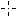
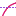

During  MeasureMode you can
perform simple measures on current selected Track
(see Select mode).
Moving mouse cursor over a Frame, some basic measure
quantities will be automatically shown; you can choose
which one using right click contextual menu to enable
current point abscissa
(),
current Track ordinate
()
and slope
().
You can quickly change the selected track
using either the mouse wheel,
or the plotkeys,
or the Legend.
A set of measured quantities, selected with
PaneQuantities option, are
shown in the Pane grid.
To view the Pane grid
use ShowPane action or set
AutoPane option to show it
automatically when switching to this mode.
The punctual measures are related to actual
Track point next to current mouse position,
no interpolation is done.
Some measured quantities can be graphically shown
through markers using ViewMeasureMarkers;
you can customize them editing the
MeasureMarkers option.